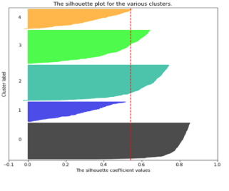

Elizabeth Glaser Association for Pediatric AIDS: Country Indicators of Performance
Project Overview

This project aims to understand the effectiveness of
the non-profit organization, Elizabeth Glaser Association for Pediatric AIDS (EGPAF), around
their performance at being able to accurately reduce the number of cases of pediatric AIDS
across the globe. Students used Power BI to create a dashboard for internal organizational
use to more easily understand the statistical data they currently have.
Client Information
EGPAF works with policymakers in the U.S. and around the world to drive the support,
leadership, and resources needed to end HIV and AIDS in children, youth, and families.
Their global work has reduced the number of infections down to 50%
Challenges Faced & Lessons Learned
Although the dataset was quite clear in this project, a welcome change
from the common partial or confusing datasets that teams often receive, many other
challenges faced this project. None of the team members knew how to operate
Power BI at the outset of the project. Yet, through workshops and online resources,
several very well done visualizations were created at the end of the project that
were commended by the client. Continous communication with the client about
the client's expectations led to a successful product.